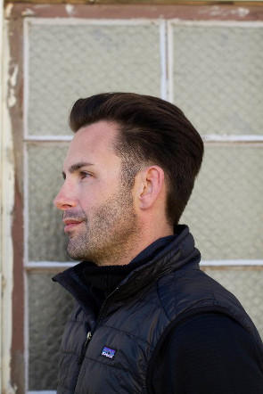

About
Matthew Heimark, M.S., MFTi is an expert in the treatment of anxiety and mood disorders, compulsivity and sex addiction, self-esteem related issues, as well as working with those facing transition, grief & loss, and issues surrounding wealth and success. He has had great success using evidence-based practices from psychoanalytically-based psychodynamic, humanistic, and existential perspectives. He has extensive experience treating adolescents and adults using a variety of theoretical applications, he has worked with patients struggling with anxiety disorders (generalized anxiety disorder, OCD, panic disorder, social phobia, and specific phobias) and mood disorders (such as depression, bipolar disorder, and schizophrenia).
Matthew completed his undergraduate studies at Boston College where he received his B.A. in Psychology. He then completed his graduate school training at San Francisco State University where he received his M.S. in Clinical Psychology. He has completed clinical internships at the San Francisco State University Psychology Clinic, College Track (a non-profit organization dedicated to serving students from underserved communities to graduate from college), and Queer LifeSpace (a non-profit clinic serving the needs of the greater San Francisco LGBTQI community). Matthew has also completed a variety of specific trainings including: Advanced Cognitive Behavioral Training (CBT) with Donald Meichenbaum, Ph.D., an 8-week Mindfulness Based Stress Reduction (MBSR) class developed by Jon Kabat-Zinn, Psychoanalytic Psychotherapy with Gay Men: Developmental and Clinical Considerations with Gary Grossman, Ph.D., Classic Psychoanalytic Papers as Seen Through the Lens of Neuroscience with Maggie Zellner, Ph.D., Reclaiming One's Life: How Neuroscience and Attachment Research Inform Recovery from Traumatic Stress with Bessel A. van der Kolk, M.D., as well as a variety of other related workshops.
Matthew is an active member at the San Francisco Center for Psychoanalysis and is currently enrolled in their intensive Psychoanalytic Psychotherapy Training Program. In addition, he holds affiliations with: The Psychoanalytic Institute of Northern California (PINC), California Society for Psychoanalytic Psychology (NCSPP), California Association of Marriage and Family Therapists (CAMFT), American Association of Marriage and Family Therapists (AAMFT), American Association for Psychological Science (APS), and American Psychoanalytic Association (APsaA).
He is a Registered Licensed Marriage & Family Therapist Intern (IMF #_____), Supervised by David Olem, LMFT, MFC_____.